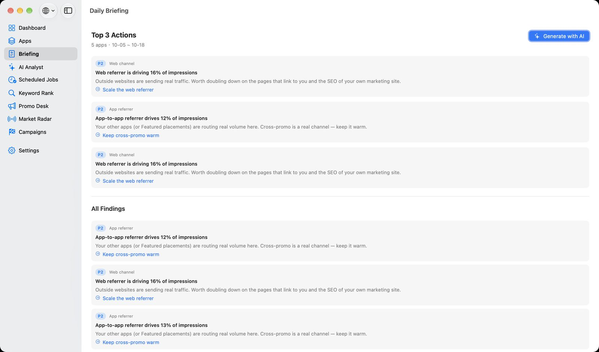
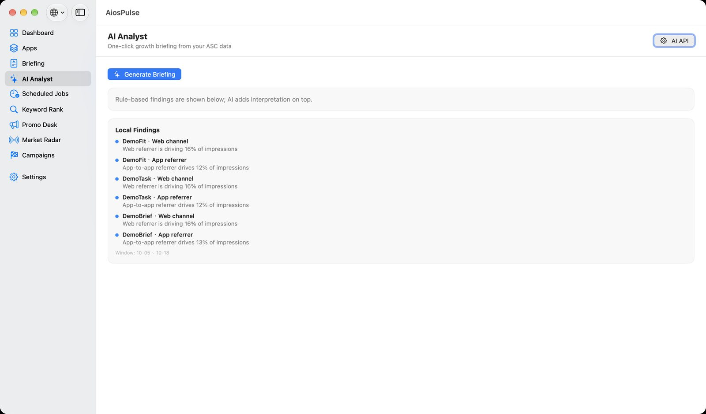
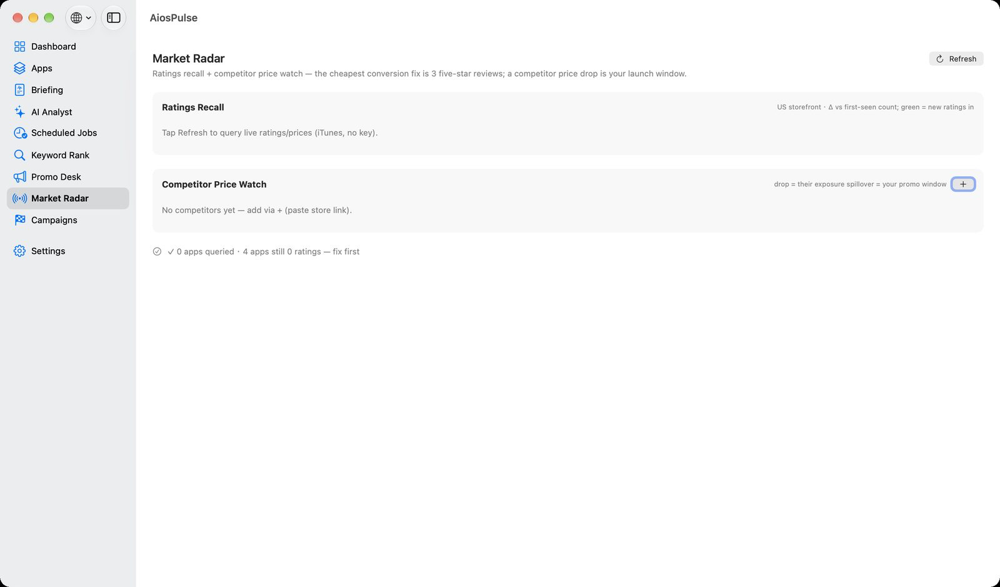
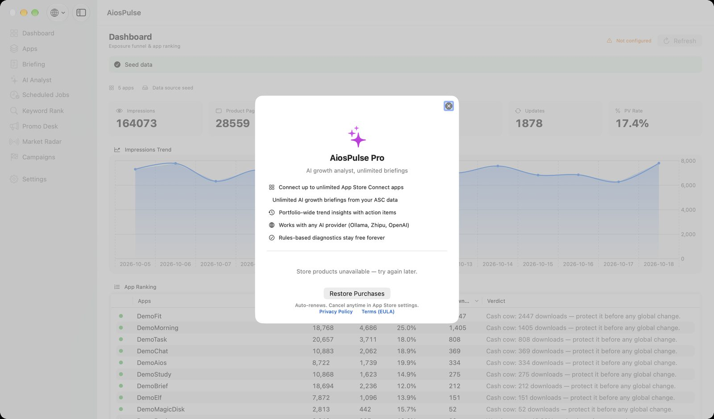
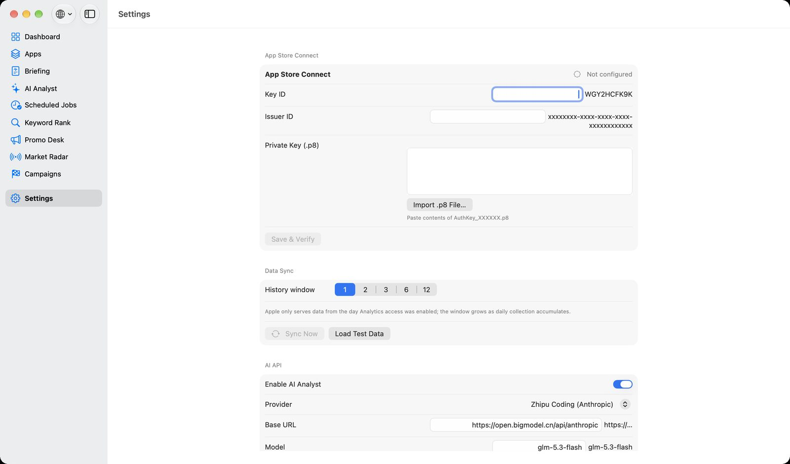
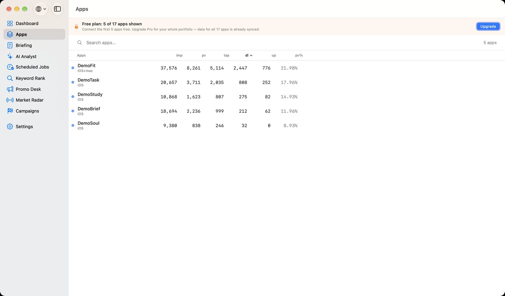
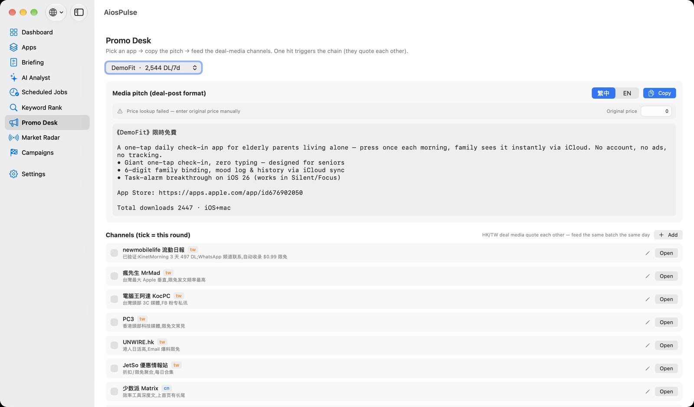
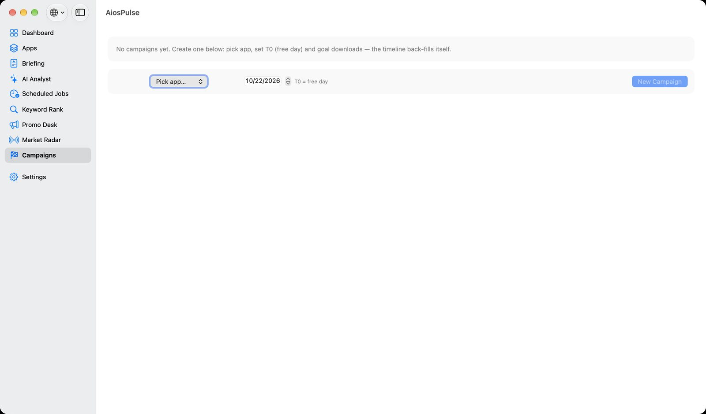
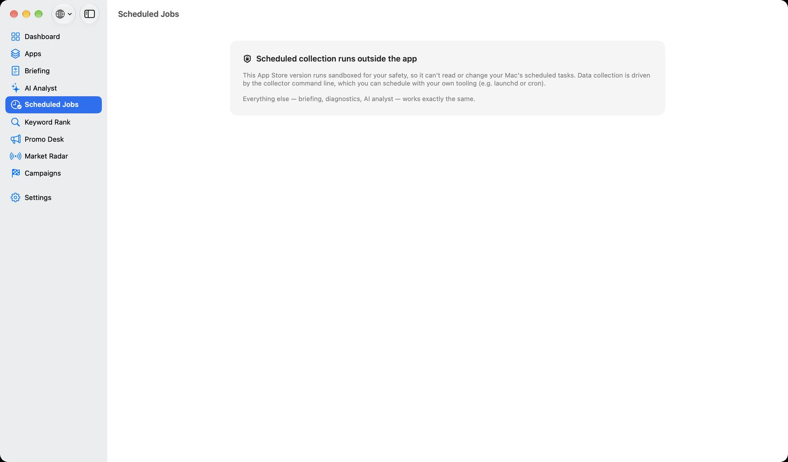

AiosPulse reads your App Store Connect analytics, writes a plain-language daily briefing, and turns movement in impressions, conversions and revenue into concrete actions — all on your Mac, nothing leaves it. AiosPulse 读取你的 App Store Connect 分析数据,生成一份说人话的每日简报,把曝光、转化、收入的异动变成可执行的行动项 —— 全程在你的 Mac 上完成,数据不出本机。 AiosPulse 讀取你的 App Store Connect 分析數據,生成一份說人話的每日簡報,把曝光、轉化、收入的異動變成可執行的行動項 —— 全程在你的 Mac 上完成,數據不出本機。 AiosPulse は App Store Connect の分析データを読み込み、毎日のブリーフィングを自然な言葉で生成。インプレッション・コンバージョン・売上の変動を具体的なアクションに変えます。すべて Mac 上で完結、データは外に出ません。
Six modules, one workflow. Each one feeds the briefing.六个模块,一条工作流,全部汇入每日简报。六個模組,一條工作流,全部匯入每日簡報。6つのモジュールが一つのワークフローに。すべてブリーフィングに集約。
Plain-language recap of what moved across all your apps — with the “so what” already written for you. Rules-based engine is free; plug in your own LLM key for deeper reads.用大白话讲清全部 app 的异动,连「所以呢」都替你写好。规则引擎免费;插上自己的 LLM Key 解读更深。用大白話講清全部 app 的異動,連「所以呢」都替你寫好。規則引擎免費;插上自己的 LLM Key 解讀更深。全アプリの動きを平易な言葉で要約。「だから何?」まで答えます。ルールエンジンは無料、LLM キーでさらに深く。

Impressions → page views → taps → downloads: see exactly which funnel stage leaks, per app, per country.曝光→产品页→点击→下载,逐层看漏斗哪一环在漏,按 app、按国家拆。曝光→產品頁→點擊→下載,逐層看漏斗哪一環在漏,按 app、按國家拆。インプレッション→ページ→タップ→DL。ファネルのどの段階が漏れているか、アプリ別・国別に可視化。
Where downloads actually come from — spot a rising market early, catch a listing problem in one country before it spreads.下载到底从哪来 —— 及早发现 rising market,在一个国家的页面出问题时就拦住它。下載到底從哪來 —— 及早發現 rising market,在一個國家的頁面出問題時就攔住它。ダウンロードの出身地を把握。伸びる市場を早期発見、一国のページ問題を拡大前に捕捉。

Track your rankings on the terms you bid on, watch them drift day by day, and see which title/keyword tweaks actually moved the needle.盯住你投的关键词排名,逐日漂移看得见;改标题/关键词到底有没有用,数据说话。盯住你投的關鍵詞排名,逐日漂移看得見;改標題/關鍵詞到底有沒有用,數據說話。設定キーワードの順位を日々追跡。タイトルやキーワード変更の効果をデータで検証。

Proceeds, refunds and renewal cohorts side by side — know your real net, not the vanity number.收入、退款、续费同期群放在一起看 —— 看真实净收入,别看虚荣数字。收入、退款、續費同期群放在一起看 —— 看真實淨收入,別看虛榮數字。売上・返金・更新コホートを並べて確認。虚栄の数字ではなく純利益を。

Runs sandboxed on your Mac. Credentials live in your Keychain, analytics in your Application Support folder. No accounts, no telemetry, no cloud.在你的 Mac 沙盒内运行:凭证进钥匙串,数据进 Application Support。无账号、无埋点、无云端。在你的 Mac 沙盒內運行:憑證進鑰匙串,數據進 Application Support。無帳號、無埋點、無雲端。Mac のサンドボックス内で動作。資格情報はキーチェーン、データは Application Support へ。アカウント・テレメトリ・クラウドなし。





In App Store Connect → Users and Access → Integrations, generate an API key with the Analytics + Sales roles. It can read, never write.在 App Store Connect → 用户和访问 → 集成里生成 API Key,授予 Analytics + Sales 角色 —— 只能读,永远不能写。在 App Store Connect → 使用者和存取 → 整合裡生成 API Key,授予 Analytics + Sales 角色 —— 只能讀,永遠不能寫。App Store Connect の「ユーザとアクセス → 統合」で API キーを発行し、Analytics + Sales ロールを付与。読み取り専用で書き込みは不可。
AiosPulse stores the key in your macOS Keychain and pulls analytics, sales and subscription reports on your schedule.AiosPulse 把 Key 存进 macOS 钥匙串,按你的节奏拉取分析、销售和订阅报表。AiosPulse 把 Key 存進 macOS 鑰匙串,按你的節奏拉取分析、銷售和訂閱報表。キーは macOS キーチェーンに保存。分析・売上・サブスクレポートを任意の頻度で取得。
Every morning, one screen: what moved, why it matters, what to do. No key yet? Built-in demo data lets you explore everything first.每天早晨一屏看完:动了什么、为何重要、该做什么。还没有 Key?内置演示数据先让你把功能逛个遍。每天早晨一屏看完:動了什麼、為何重要、該做什麼。還沒有 Key?內置演示數據先讓你把功能逛個遍。毎朝 1 画面で:何が動き、なぜ重要か、何をすべきか。キーがなくても内蔵デモデータで全機能を試せます。
AiosPulse has no backend. “Connect” means your Mac talks to Apple directly.AiosPulse 没有后端。「连接」指的是你的 Mac 直连 Apple。AiosPulse 沒有後端。「連接」指的是你的 Mac 直連 Apple。AiosPulse にバックエンドはありません。「接続」とはあなたの Mac が Apple と直接通信することです。
Your API key is stored by macOS Keychain with your app's sandbox ACL. It is never written to a plain file, never synced.API Key 由 macOS 钥匙串按沙盒 ACL 保管,不落明文文件、不同步。API Key 由 macOS 鑰匙串按沙盒 ACL 保管,不落明文文件、不同步。API キーはサンドボックス ACL 付きでキーチェーンが管理。平文ファイル化も同期もされません。
Reports land in your Application Support folder as files you can inspect. Delete the folder, and every trace is gone.报表落在你自己的 Application Support 目录,文件可查可审;删掉目录,痕迹全无。報表落在你自己的 Application Support 目錄,文件可查可審;刪掉目錄,痕跡全無。レポートは Application Support 内の検査可能なファイルとして保存。フォルダを削除すれば痕跡は完全に消えます。
No analytics SDKs, no crash reporting service, no usage stats. The App Store privacy label says “Data Not Collected” — because it's true.无分析 SDK、无崩溃上报服务、无使用统计。App Store 隐私标签填「未收集任何数据」—— 因为这就是事实。無分析 SDK、無崩潰上報服務、無使用統計。App Store 隱私標籤填「未收集任何數據」—— 因為這就是事實。分析 SDK・クラッシュレポート・利用統計は一切なし。App Store のプライバシーラベルは「データ未収集」—— 事実そのままです。
Yes. AiosPulse launches with built-in demo data for 17 sample apps, so every module is explorable before you connect anything.可以。AiosPulse 内置 17 个示例 app 的演示数据,连接前即可体验全部模块。可以。AiosPulse 內置 17 個示例 app 的演示數據,連接前即可體驗全部模組。はい。17 のサンプルアプリのデモデータを内蔵しており、接続前に全モジュールを体験できます。
No. You create the key yourself with read-only roles, it stays in your Keychain, and requests go straight from your Mac to Apple. We never see it.不会。Key 由你自己生成、只有只读角色、存你自己的钥匙串,请求从你的 Mac 直达 Apple,我们全程看不到。不會。Key 由你自己生成、只有唯讀角色、存你自己的鑰匙串,請求從你的 Mac 直達 Apple,我們全程看不到。いいえ。キーは読み取り専用ロールで自身が発行し、キーチェーンに保存。リクエストは Mac から Apple へ直接。当社は一切関与しません。
The free, rules-based engine already flags moves and funnel leaks. Optionally, you can plug in your own LLM API key to get written analysis and recommendations in your language. The app works fully without it.免费的规则引擎已经能标出异动和漏斗漏洞;可选插入你自己的 LLM Key,得到成文的中文/英文/日文分析与建议。不插也完全可用。免費的規則引擎已經能標出異動和漏斗漏洞;可選插入你自己的 LLM Key,得到成文的中文/英文/日文分析與建議。不插也完全可用。無料のルールエンジンでも異常やファネルの漏れは検出できます。任意で LLM キーを接続すると、日本語の分析と提案文を生成。未接続でも全機能利用可能です。
macOS 14 or later. All apps linked to your App Store Connect team are supported, iOS and Mac alike.macOS 14 及以上。你 App Store Connect 团队下的全部 app(iOS 与 Mac)都在支持范围。macOS 14 及以上。你 App Store Connect 團隊下的全部 app(iOS 與 Mac)都在支持範圍。macOS 14 以降。App Store Connect チームに紐づく全アプリ(iOS・Mac 両方)に対応。